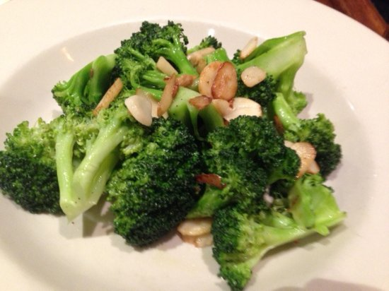

Image from Tripadvisor Patsy's Pizzeria, New York City
Broccoli with garlic is a classic culinary pairing that transforms a humble cruciferous vegetable into a savory, aromatic masterpiece. When fresh broccoli florets are sautéed or roasted with sliced or minced garlic, the sulfurous notes of the greens are beautifully balanced by the pungent, buttery depth of the allium. The heat mellows the garlic's sharp bite into a nutty sweetness, while the broccoli absorbs the infused oil, ensuring every bite is rich with flavor. Often finished with a pinch of red pepper flakes or a squeeze of lemon, this dish is a staple for anyone seeking a side that is as nutritious as it is craveable.
Beyond its undeniable taste, this combination is a texture lover's dream. Ideally prepared al dente, the broccoli retains a satisfying crunch in the stems and a tender, lacy quality in the charred tops, providing a perfect canvas for the golden bits of toasted garlic. Because garlic contains allicin broccoli is packed with fiber and vitamins, this duo isn't just a win for the palate—it’s a powerhouse of wellness. Whether served alongside a seared protein or tossed into a bowl of pasta, broccoli with garlic remains a timeless example of how simple ingredients, when treated with care, create something far greater than the sum of their parts.
Wash the broccoli and cut it into uniform florets. Don’t toss the stems! Peel the woody outer layer off the stalks, slice them into thin rounds, and include them—they have a wonderful sweetness.
Heat the olive oil in a large skillet over medium heat. Add the garlic (and red pepper flakes, if using). Cook for about 1 minute, stirring constantly, until the garlic is fragrant and just beginning to turn a pale golden color.
Add the broccoli florets to the pan and toss to coat them in the garlic oil. Pour in 2–3 tablespoons of water (or broth) and immediately cover the pan with a lid. Let it steam for 2–3 minutes. This ensures the stems get tender while keeping the color vibrant green.
Remove the lid and increase the heat to medium-high. Continue to cook for another 2–3 minutes, stirring occasionally, until the water has evaporated and the edges of the broccoli start to develop some light brown, caramelized charred spots.
Remove from heat. Season with salt, pepper, and a squeeze of fresh lemon juice or a sprinkle of Parmesan.